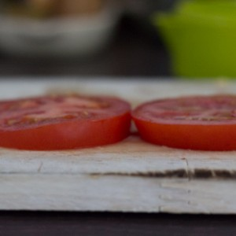
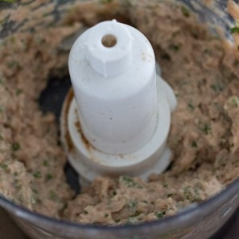
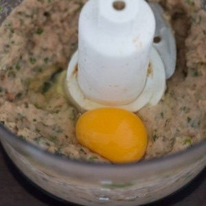
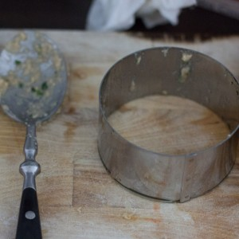
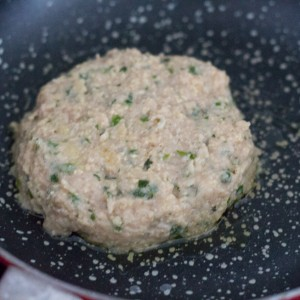
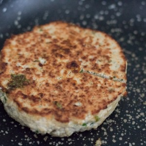
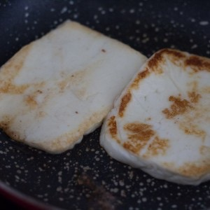

Burger oriental

Aujourd’hui j’ai décidé de partager avec vous cette recette de burger orientale que je trouve absolument parfaite pour cet été et qui nous a régalé avant notre départ pour la Turquie.
Il y a peu de temps, certainement très inspirée par mes vacances en Turquie qui approchaient à grand pas, j’ai eu la soudaine idée de faire cet hamburger. Je ne saurais pas comment expliquer comment cette idée de recette m’est venue, mais j’ai envie de dire heureusement qu’elle m’est venue! Il était 12h par là et il me restait 30 minutes avant ma pause déjeuner et je savais qu’au menu de ce midi là une petite salade m’attendait. J’avais faim, très faim et ce jour-là j’avais envie de bien plus qu’une petite salade. Les goûts, les odeurs, mes préparatifs pour les vacances, tout ça n’a fait qu’un tour dans ma tête et je me suis empressée noter mes petites idées (et de saliver). J’ai envoyé un petit message à mon chéri pour le faire râler un peu (et ça a marché!!!) car lui aussi allait manger cette salade ce midi là… Il fallait ensuite que je donne un nom à cette nouvelle recette et pour le coup je vous l’avoue j’ai été bien moins inspirée puisque je n’ai trouvé que le nom de: burger oriental. En même temps, au vu des ingrédients qui composent ce burger c’était assez évident. Du houmous, du fromage halloumi, un steak de poulet façon chich taouk (entre autre) il fallait bien que le mot « oriental » se retrouve quelque part! Ce midi là, nous avons bien mangé la salade qui nous attendait mais on était content car on savait que le soir on allait carrément se régaler et je le confirme aujourd’hui c’est réellement ce qui est arrivé! Si vous aussi vous aimez toutes ces odeurs, toutes ces saveurs allez-y les yeux fermés et préparez-vous ce petit burger qui vous plaira j’en suis sûre! Pour les pains je les ai fait avec ma recette habituelle qui se trouve juste ICI que j’ai saupoudré de zhatar en plus du sésame mais vous pouvez tout aussi bien en acheter dans le commerce (sauf que ce sera moins bon^^). Je vous laisse maintenant avec la recette de mon burger oriental qui je l’espère vous tentera autant qu’à moi (qu’à nous)!
Ingrédients
- Blancs de poulet - 300g
- Citron - jus d'un demi citron
- Huile d'olive - 2 càs
- Cumin - 1 càc
- Quatres épices - 2 càc
- Persil - 1/2 botte
- Menthe - 1/2 botte
- Oeuf - 1
- Chapelure - 80g
- Oignon - 1
- Huile de friture
- Farine - 1 càs bombée
- Tomate - 1
- Sucre - 1 pincée
- Huile d'olive
- Thym
- Fromage Halloumi (ou fromage à griller type - 180g
- Houmous - 80g devrait suffire
Instructions
- Couper le poulet grossièrement
- Dans un saladier, verser le jus de citron, ajouter le poulet et les épices
- Remuer
- Laisser mariner
- Pendant ce temps, couper la tomate en deux rondelles assez épaisses
- Déposez-les sur une plaque allant au four
- Arrosez-les d’huile d'olive
- Salez, poivrez
- Saupoudrez de thym et d' une pincée de sucre
- Retournez-les bien pour qu'elles soient bien enrobées
- Enfourner pendant 1heure à 170°
- A la sortie du four, réserver
- Dans un mixeur, verser le poulet, la menthe et le persil
- Mixer le tout
- Ajouter l’œuf et la chapelure et mélanger jusqu'à obtenir une farce bien homogène
- Diviser la farce en deux
- Former vos steaks (je me suis aidée d'un emporte-pièce)
- Faites les cuire dans une poêle anti-adhésive jusqu' ce qu'ils soient bien dorés
- Préparer le houmous maison ICI ou achetez-en du tout prêt en supermarché
- Couper les oignons en lamelles
- Verser la farine de manière à faire en sorte que toutes les lamelles soient bien enrobées
- Plonger les dans l'huile chaude pendant 30 minutes jusqu'à ce qu'ils soient dorés
- Posez-les sur du papier absorbant et réserver
- Couper le fromage Halloumi (que vous pouvez remplacer par du fromage à griller type "salakis") en un gros morceaux de la taille du burger
- Faites le griller dans une poêle et réserver
- Préchauffer le four à 150°
- Couper les pains en deux
- Tartiner de houmous
- Poser une tomate rôtie, un steak de poulet et une tranche de fromage dessus
- Saupoudrez d'un peu d'oignons frits
- Réchauffer dans un four chaud pendant 5 bonnes minutes
- Tartiner d'un peu de houmous le chapeau du burger
- Refermer le burger avec le chapeau à la dernière minute dans le four
- Dégustez sans plus attendre!







Les tips de la communauté
Astuces
- lère epicure ( des épices vendu au canada) mon but de recherche était de trouver de nouvelle recette de burger. Et bien merci j’y ai trouvé de belle inspiration pour mes ateliers !!! Un pur bonheur pour les yeux votre blog. Bravo !
Variantes suggérées
- de burger ! J’en lècherais mon Mac là tout de suite ^^’